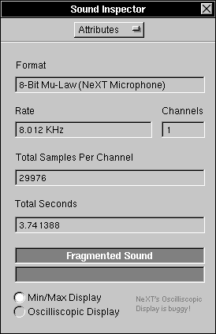

The Attributes Inspector
The Attributes Inspector displays current sound attributes, and lets you modify the sound and its display in a few ways. To display the Attributes Inspector, you need to bring up the Sound Inspector with the Tools Menu, and then choose Attributes: 

The Attributes Inspector lets you view or change:
 The sound's Format.
The sound's Format.
 The sound's Sampling Rate.
The sound's Sampling Rate.
 The sound's number of Channels (1=Mono, 2=Stereo,etc.).
The sound's number of Channels (1=Mono, 2=Stereo,etc.).
 The Total Samples Per Channel of your sound.
The Total Samples Per Channel of your sound.
 The Total Seconds of your sound. This is computed as the Total Samples Per Channel times the Sound Rate.
The Total Seconds of your sound. This is computed as the Total Samples Per Channel times the Sound Rate.
 Whether or not the sound is Fragmented. If the sound is fragmented, the word FRAGMENTED appears in the top dark gray box. For more information on fragmentation and compacting, press here:
Whether or not the sound is Fragmented. If the sound is fragmented, the word FRAGMENTED appears in the top dark gray box. For more information on fragmentation and compacting, press here: 
 Whether or not the sound is Empty. If the sound is empty, the word FRAGMENTED appears in the top dark gray box.
Whether or not the sound is Empty. If the sound is empty, the word FRAGMENTED appears in the top dark gray box.
 Whether or not the sound's format is Unplayable and/or Undisplayable. If the sound is either, it's indicated in the bottom dark gray box.
Whether or not the sound's format is Unplayable and/or Undisplayable. If the sound is either, it's indicated in the bottom dark gray box.
 If the sound is using a Min/Max Display or Oscilliscopic Display. For more information on display formats,
If the sound is using a Min/Max Display or Oscilliscopic Display. For more information on display formats,
 press here:
press here: